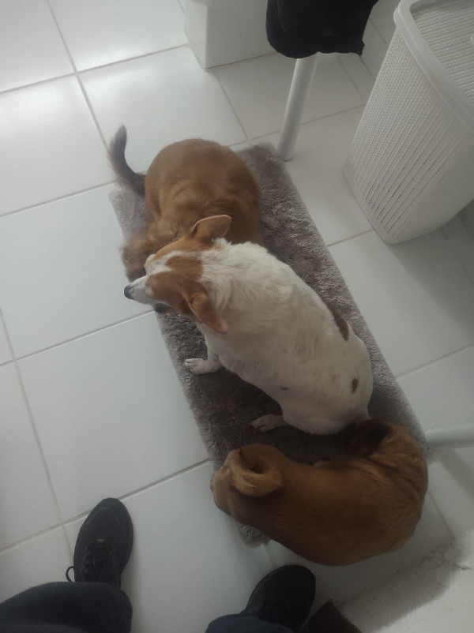

Molly está presente em nossa família à mais de 10 anos, veio meses após o nascimento de Eduardo,sua convivência com a pança😾 nunca foi um problema, diferente do Joaquim, Molly sempre se deu bem com todos.
História da Molly
Apelidos da Molly
A "magrela" não teve tantos apelidos mas um animal que se parece muito com ela por conta de suas orelhas é:
Sobre a Molly
Apesar de ser uma cadela muito amorosa, uma grande dificuldade que ela tem é lidar com integrantes novos, o que aconteceu com Joaquim e com a Pandora, não sabemos ao certo, mas acreditamos que seja ciúmes. Mas, com o tempo ela foi aceitando eles e tudo certo.
